Новини університету
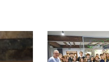
Кредит на пів мільйона: як у Львівській політехніці провели ESG Finance Day
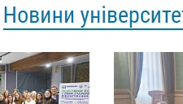
У Львівській політехніці презентували програму підготовки викладачів Train-the-Trainer від фінських партнерів
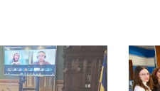
Сталий розвиток, академічна співпраця та міжкультурний діалог: Львівська політехніка на осінній школі в Італії
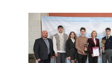
Студенти Львівської політехніки стали переможцями та призерами міжнародних змагань з кібербезпеки CTF у Кишиневі
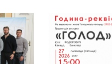
Вшанування пам’яті жертв Голодомору-геноциду та загиблих в українсько-російській війні, презентація виставки «Голод» Юлії Федорович (Канада)
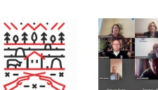
Стів Джардінг у Львівській політехніці: про силу комунікації, відповідальне лідерство та мистецтво впливу
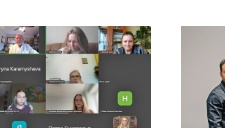
Студенти ІХХТ вибороли перше місце на всеукраїнському хакатоні GreenChem Hackathon 2026
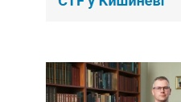
Директор НТБ Львівської політехніки Андрій Андрухів: «Наша бібліотека сама створює цифрові рішення»
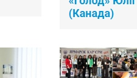
Ярмарок кар’єри 2026: підсумки, враження та нові можливості
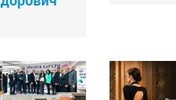
У Львівській політехніці відбудеться міжнародний науково-практичний семінар до 170-річчя від дня народження Софії Русової
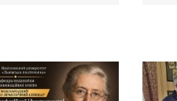